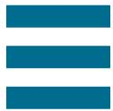

  <main>

    <div class="grid pad-t-2 gutter">

      <div class="content gutter-half unit [ xs-1 s-1 m-1-3 l-1-3 ]">

        <input type="checkbox" class="nav-check hide-custom-input" id="nav-check">
        <!-- This is the button we’d click to open/close the navigation -->
        <label class="nav-label" for="nav-check">
          
          
        </label>
        <nav class="nav-toggle pin-t">
          <ul class="push-0">
            <li><a href="{{site.baseurl}}/illustration.html">Illustration</a></li>
            <li><a href="{{site.baseurl}}/applications.html">Applications</a></li>
            <li><a href="{{site.baseurl}}/motion.html">Motion</a></li>
            <li><a href="{{site.baseurl}}/mixed-media.html">Mixed Media</a></li>
            <li><a href="{{site.baseurl}}/branding.html">Branding</a></li>
          </ul>
        </nav>

          <div class="nav pad-top-half pad-bottom-half side-nav">
            <nav>
              <ul class="push-none list-group text-left giga pad-t-3">
                <li class="exa"><a href="{{site.baseurl}}/illustration.html">Illustration</a></li>
                <li class="exa"><a href="{{site.baseurl}}/applications.html">Applications</a></li>
                <li class="exa"><a href="{{site.baseurl}}/motion.html">Motion</a></li>
                <li class="nina gutter current"><a href="{{site.baseurl}}/mixed-media.html">Mixed Media</a></li>
                <li class="exa"><a href="{{site.baseurl}}/branding.html">Branding</a></li>
              </ul>
            </nav>
          </div>

        </div>

        <div class="unit [ xs-1 s-1 m-2-3 l-2-3 ]">
          <p itemprop="name">Skullduggery</p>
          <p itemprop="description">An exercise in making an initial capital for a chosen word. the research was a key factor in this outcome drawing. It demonstrates my ability to combine elements into a cohesive design. </p>
          

          <p itemprop="name" class="pad-t-2">Portait</p>
          <p itemprop="description">This illustration is an exploration working with making paint brushes in illustrator. This demonstrates my ability to create custom illustration instruments and uses them in a productive manner as well as layering them and creating textures within a digital painting.</p>
          

        </div>


      </div>

  </main>
